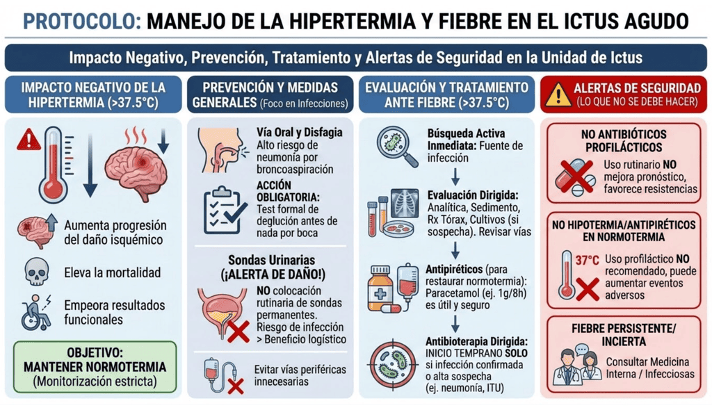

La hipertermia tiene un efecto negativo sobre el pronóstico del infarto cerebral y la hemorragia intracraneal. Las temperaturas por encima de 37,5°C aumentan el riesgo de progresión del daño isquémico, elevan la mortalidad y empeoran los resultados funcionales. Se recomienda la monitorización estricta para identificar y tratar rápidamente cualquier elevación térmica, con el objetivo de mantener la normotermia.
Prevención y medidas generales
Las infecciones (principalmente respiratorias y del tracto
urinario) son complicaciones graves y causas frecuentes de
fiebre que deben prevenirse activamente:
- Vía oral y disfagia: Existe un alto riesgo de neumonía por broncoaspiración. Es obligatorio realizar un test formal de deglución antes de administrar alimentos, líquidos o medicación oral.
- Sondas urinarias (¡Alerta de Daño!): No se debe realizar la colocación rutinaria de sondas vesicales permanentes, ya que el riesgo asociado de infección del tracto urinario supera cualquier beneficio logístico. Deben evitarse vías periféricas innecesarias o prolongadas.
Evaluación y tratamiento ante fiebre
La fiebre obliga a una búsqueda activa e inmediata de la fuente
de infección subyacente para evitar complicaciones:
-
Evaluación: Se solicitarán pruebas dirigidas como analítica urgente, sedimento urinario, radiografía de tórax portátil, y cultivos (hemocultivos, cultivo de esputo, urocultivo) si hay sospecha clínica. Se revisarán las vías periféricas para descartar flebitis.
-
Antipiréticos: Ante temperaturas >37,5°C, el paracetamol (ej. 1 g/8 h VO o IV) ha demostrado utilidad y seguridad para restaurar la normotermia.
-
Antibioterapia dirigida: Se iniciará tratamiento antibiótico de forma temprana solo si existe una infección confirmada o una alta sospecha clínica de un foco infeccioso específico (ej. neumonía o infección urinaria).
Alertas de Seguridad
-
No a los antibióticos profilácticos: No se recomienda el uso rutinario o profiláctico de antibióticos en pacientes con ictus, ya que no mejora el pronóstico funcional y favorece las resistencias.
-
No a la hipotermia o antipiréticos en normotermia: En pacientes con temperatura normal (normotérmicos), el uso profiláctico de fármacos reductores de temperatura o la hipotermia inducida no están recomendados, no mejoran la recuperación y pueden aumentar los eventos adversos.